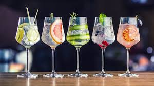
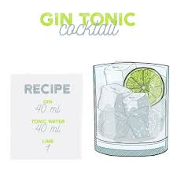

<h1>Gin Tonic</h1>

<h3>Ingredients:</h3>
<ul>
    <li>Gin 40 ml</li>
    <li>Tonic Water 40 ml</li>
    <li>Lime 1</li>
    <li>Crushed Ice 80 ml</li>
</ul>

<h3>Steps:</h3>
<ol>
    <li>On a cold glass, put the ice and the Lime</li>
    
    <li>Pour the Gin into the glass, put the Tonic Water and stir</li>
    <li>Now it is ready to be drinked!</li>
    <li>ENJOY</li>
</ol>

<a href="../index.html">Back to Homepage</a>